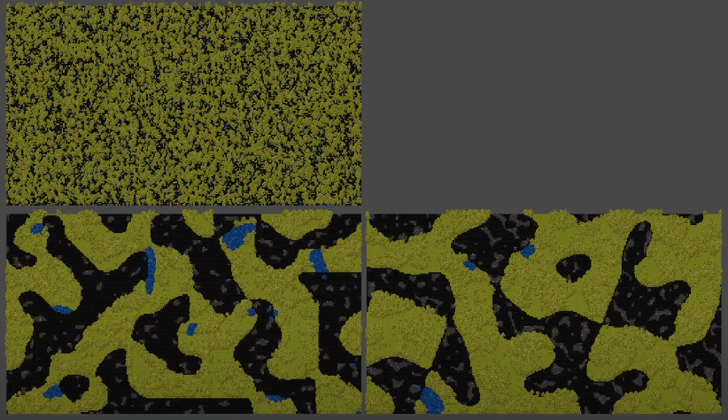
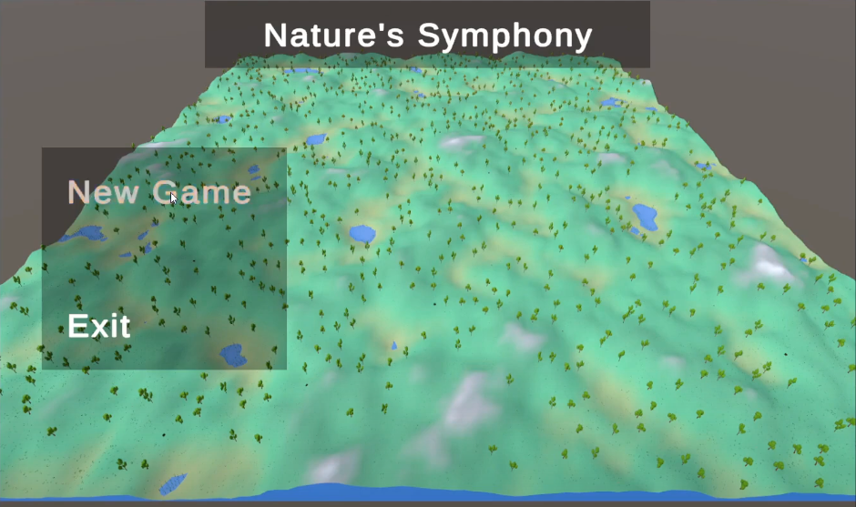
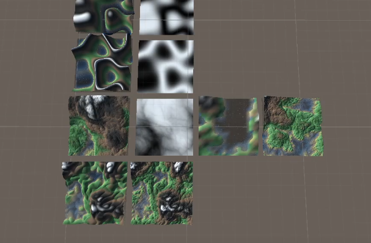

This project generates 2D maps using Perlin and Open Simplex Noise for biome classification and asset generation.

A 3D ecosystem where foxes and hares interact with terrain and water, all procedurally generated.

Explore procedural terrain generation using Compute Shaders, FBM, and domain warping in Unity.